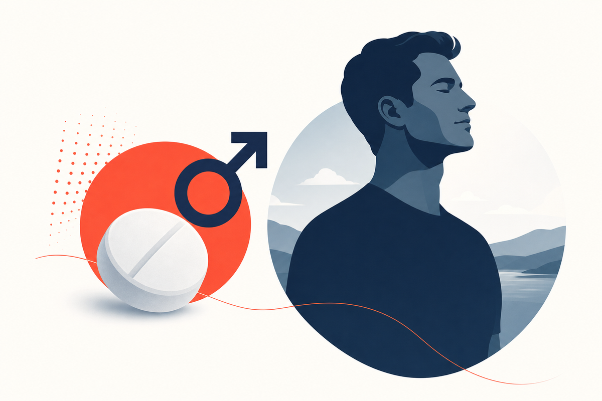

Key Takeaways
- ED affects an estimated 30 million American men and is not a normal part of aging. It is a treatable medical condition with identifiable causes, and roughly 70 percent of cases have a vascular component.
- ED is often the earliest clinical sign of cardiovascular disease. Meta-analytic data show ED independently predicts coronary heart disease (RR 1.50) and stroke (RR 1.36), and the 2024 Princeton IV Consensus now formally treats ED as a cardiovascular risk-enhancing factor.
- PDE5 inhibitors (sildenafil, tadalafil, vardenafil, avanafil) remain first-line therapy per the AUA (2018, reaffirmed 2025) and EAU (2026) guidelines. Generic sildenafil and tadalafil have driven cash-pay pricing down to roughly $0.50 to $2 per dose in 2026.
- The 2023 NEJM TRAVERSE trial resolved decades of controversy: testosterone therapy in hypogonadal men is cardiovascular-neutral. It does not increase major adverse cardiac events, though rates of pulmonary embolism and atrial fibrillation were higher in the testosterone arm.
- Newer evidence connects ED to obstructive sleep apnea (up to 82 percent prevalence in OSA), GLP-1 receptor agonist therapy (bidirectional effects depending on baseline hypogonadism), and aerobic exercise (average IIEF-EF gain of 2.8 points, larger in severe ED).
- Over-the-counter "male enhancement" supplements remain a serious safety issue. The FDA has issued roughly 445 tainted-product notices since 2012, most containing undeclared PDE5 inhibitors at unregulated doses.

Here is something worth understanding before reading anything else about erectile dysfunction: it is not primarily a sexual problem. It is a vascular problem. And in a substantial share of men, it is the first sign that something dangerous is happening inside your blood vessels, sometimes years before a heart attack or stroke ever occurs.
Erectile dysfunction, defined as the consistent inability to achieve or maintain an erection sufficient for satisfactory sexual performance, affects an estimated 30 million men in the United States.[1] The combined prevalence of moderate to complete ED rises from approximately 22 percent at age 40 to 49 percent by age 70. Yet the majority of men with ED never discuss it with a physician. That silence can be medically dangerous, because for many men the first opportunity to catch cardiovascular disease early quietly comes and goes in the bedroom.
This guide is a physician's attempt to change that. It covers the biology, the newest evidence from 2023 through 2026, the medications and what they actually cost in 2026, the emerging role of GLP-1 agonists, sleep apnea and obesity as underappreciated drivers, what to do after prostate surgery, and why the supplement aisle is more dangerous than most patients realize. Every material claim is cited to a primary source.
What Causes Erectile Dysfunction?
An erection is a surprisingly complex vascular event. It requires coordinated activity of the nervous system, blood vessels, hormones, and psychological state. Sexual arousal triggers nerve signals that release nitric oxide in the penile arteries. Nitric oxide activates guanylate cyclase, which produces cyclic GMP, the molecule that relaxes smooth muscle in the arterial walls of the penis and allows blood to fill the corpora cavernosa. Anything that disrupts this chain, whether damaged blood vessels, impaired nerve signaling, hormonal deficiency, or psychological interference, can cause ED.
Vascular causes (the most common)
Roughly 70 percent of ED cases have a vascular component.[2] The same process that narrows coronary arteries, endothelial dysfunction and atherosclerotic plaque buildup, also narrows the penile arteries. The critical difference is size. Penile arteries are 1 to 2 mm in diameter, roughly one-third the size of coronary arteries. Plaque buildup causes noticeable problems in the penis first, often years before it affects the heart. Hypertension, dyslipidemia, diabetes, and smoking all damage the endothelium and accelerate this process.
Neurological causes
Conditions that damage nerves involved in erection signaling include diabetes (diabetic neuropathy), multiple sclerosis, Parkinson's disease, spinal cord injury, and pelvic surgery, particularly radical prostatectomy, which can injure the cavernous nerves that run alongside the prostate.
Hormonal causes
Testosterone is not the primary driver of the erection mechanics themselves, but it modulates libido and contributes to nitric oxide signaling. Low testosterone (hypogonadism), defined by the AUA as total testosterone consistently below 300 ng/dL on two early-morning draws, is found in roughly 20 to 40 percent of men with ED.[3] Other hormonal contributors include thyroid dysfunction, elevated prolactin, and poorly controlled diabetes.
Psychological causes
Performance anxiety, depression, relationship stress, and generalized anxiety can all cause or worsen ED. In younger men without vascular risk factors, psychological causes are especially common. A useful clinical distinction: psychological ED tends to be situational (erections still occur during sleep or with specific stimuli but not with a partner), while vascular ED is typically consistent across all situations.
Medication-induced ED
A frequently overlooked cause. Common culprits include:
- Antihypertensives: beta-blockers (especially older agents like atenolol) and thiazide diuretics are well-established contributors. ACE inhibitors and ARBs are generally better tolerated.
- Antidepressants: SSRIs (fluoxetine, sertraline, paroxetine) cause sexual dysfunction in 30 to 70 percent of patients. Bupropion and mirtazapine have lower rates.
- Antiandrogens and 5-alpha reductase inhibitors: finasteride and dutasteride (used for BPH and hair loss) can cause ED that occasionally persists after stopping.
- Opioids: chronic opioid use suppresses testosterone production (opioid-induced hypogonadism) and is an increasingly recognized cause.
- Recreational substances: excessive alcohol, cannabis, and anabolic steroids all impair erectile function through distinct mechanisms.
ED as a Cardiovascular Warning Sign
This is the single most important section in the guide. If you take nothing else away, understand this: erectile dysfunction can be the first clinical manifestation of systemic cardiovascular disease, and the current U.S. cardiology consensus now treats it that way.
The penile arteries (1 to 2 mm diameter) are significantly smaller than coronary arteries (3 to 4 mm). When atherosclerosis begins, the smaller vessels are affected first, producing ED as the earliest symptom. A 2023 JACC Advances umbrella review of prior meta-analyses found men with ED have an increased risk of cardiovascular disease (RR 1.45, 95 percent CI 1.36 to 1.54), coronary heart disease (RR 1.50), cardiovascular mortality (RR 1.50), myocardial infarction (RR 1.55), stroke (RR 1.36), and all-cause mortality (RR 1.25), all with P less than 0.001.[4]
The 2024 Princeton IV Consensus, published in Mayo Clinic Proceedings, formalized this: any man presenting with ED should undergo cardiovascular risk assessment before starting treatment, and PDE5 inhibitors are now considered cardioprotective rather than merely safe in stable cardiac patients.[5] The American College of Cardiology, in a September 2024 clinical summary, went further and classified ED as an atherosclerotic cardiovascular disease "risk-enhancing factor" alongside chronic kidney disease and metabolic syndrome.[6]
Princeton IV Cardiovascular Risk Stratification
Princeton IV separates men with ED into three tiers based on cardiac risk before clearing them for sexual activity and ED treatment:
| Risk tier | Typical patient | Recommendation |
|---|---|---|
| Low | Asymptomatic, fewer than 3 cardiovascular risk factors, controlled hypertension, mild stable angina, NYHA class I to II heart failure, exercise tolerance of at least 5 METs without symptoms | Safe for sexual activity. PDE5 inhibitors may be initiated in primary care with standard counseling. |
| Intermediate | Three or more cardiovascular risk factors, moderate stable angina, recent MI (2 to 8 weeks), NYHA class III heart failure, non-cardiac atherosclerotic disease | Cardiology evaluation and exercise testing (for example a 4-minute Bruce protocol) before clearance. Reclassify to low or high risk based on results. |
| High | Unstable or refractory angina, uncontrolled hypertension, NYHA class IV heart failure, recent MI (within 2 weeks), high-risk arrhythmia, obstructive hypertrophic cardiomyopathy, moderate to severe valvular disease | Defer sexual activity and PDE5 inhibitor initiation. Stabilize the cardiac condition first, then reassess. |
Practically, this means: if you are a man under 60 with new-onset ED and no clear explanation, your evaluation should include blood pressure, fasting glucose or HbA1c, a lipid panel, and a discussion of ASCVD risk. ED combined with even one additional risk factor (hypertension, diabetes, obesity, smoking, family history) warrants meaningful cardiovascular workup, not just a prescription.
What's Changed in 2024 to 2026
The 2018 AUA ED Guideline remains the operative U.S. standard and was reaffirmed as current in October 2025.[1][7] The EAU published a 2026 limited update of its Sexual and Reproductive Health Guidelines, which includes the ED chapter.[8] Several things have shifted in clinical practice over the last two years, even without a wholesale guideline rewrite.
The traditional stepwise approach (pills, then injections, then surgery) has been replaced by shared decision-making. All patients should be informed of every treatment modality, from lifestyle changes to penile prostheses, and the choice is individualized based on preferences, severity, comorbidities, and expectations rather than a fixed ladder.[1]
PDE5 inhibitors remain first-line
The AUA and EAU both continue to recommend PDE5 inhibitors as first-line pharmacological treatment. All four available agents (sildenafil, tadalafil, vardenafil, avanafil) are broadly equivalent in efficacy, with choice individualized by onset, duration, food interaction, and cost.[1]
Testosterone therapy safety is now settled
The 2023 NEJM TRAVERSE trial (n=5,246 hypogonadal men with elevated cardiovascular risk) demonstrated that transdermal testosterone was non-inferior to placebo for major adverse cardiac events (HR 0.96, 95 percent CI 0.78 to 1.17) over a mean 21.7 months of treatment.[9] This is the definitive answer to years of debate. A 2026 meta-analysis of 41 randomized trials corroborated the null MACE signal (OR 0.83, 95 percent CI 0.52 to 1.32).[10] One caveat: TRAVERSE did detect higher rates of pulmonary embolism (0.9 vs 0.5 percent), atrial fibrillation (3.5 vs 2.4 percent), and acute kidney injury (2.3 vs 1.5 percent) in the testosterone arm. Any 2026 observational cohort suggesting higher cardiovascular risk with TRT (as one recent database analysis did, HR 1.27) reflects confounding by indication and does not override the RCT finding.[11]
Low-intensity shockwave therapy: still investigational
The 2025 Cochrane review of 21 randomized trials (1,357 men) found low-intensity shockwave therapy (LiSWT) may improve short-term IIEF-EF scores by roughly 3.9 points and long-term scores by 5.3 points versus sham, with low certainty of evidence.[12] An abridged version was published in BJU International in early 2026 for wider clinical distribution.[13] The AUA continues to classify LiSWT as investigational. In practice this means it may help some men, particularly those partly responsive to PDE5 inhibitors, but the evidence is not strong enough to recommend it universally, and it is not covered by insurance.
Generics have collapsed the price
Generic sildenafil (available since 2017) and tadalafil (since 2018) have driven cash-pay pricing down dramatically. GoodRx pricing in July 2026 shows generic sildenafil 20 mg at roughly $15 for 30 tablets and 100 mg at roughly $15 for 10 tablets.[14] CMS NADAC data show generic tadalafil 20 mg at approximately $0.21 per tablet at the acquisition level.[15] The historical brand-name pricing of $70 to $90 per pill no longer applies to standard ED therapy.
Decision Framework: Home, Doctor, or Urgent Care
One of the most useful clinical skills is helping men understand when ED warrants medical evaluation and when it can be addressed with lifestyle changes.
| Scenario | Recommended approach | Rationale |
|---|---|---|
| Occasional difficulty with erections after alcohol, stress, fatigue, or sleep deprivation in an otherwise healthy man | Self-management: reduce alcohol, improve sleep, manage stress, increase physical activity | Situational ED is common and usually resolves with lifestyle adjustment. Not a medical emergency. |
| Persistent ED lasting more than 3 months in a man with no known cardiovascular risk factors | Schedule a physician evaluation. Not urgent, but important. | Persistent ED warrants investigation for underlying vascular, hormonal, or psychological causes. |
| ED with known risk factors (diabetes, hypertension, obesity, smoking, dyslipidemia, family history of heart disease) | Physician evaluation recommended. Consider cardiology referral per Princeton IV intermediate-risk criteria. | ED in the context of vascular risk factors may signal early atherosclerosis and warrants cardiovascular screening.[5] |
| ED with new-onset chest pain, shortness of breath, or exercise intolerance | Urgent medical evaluation, same day or emergency department. | The combination of ED and cardiac symptoms suggests significant cardiovascular disease requiring immediate assessment. |
| Prolonged erection lasting more than 4 hours (priapism) | Emergency department immediately. | Priapism is a urological emergency. Untreated ischemic priapism can cause permanent penile damage within 4 to 6 hours. |
Treatment Options
PDE5 inhibitors: the first-line standard
Phosphodiesterase type 5 (PDE5) inhibitors work by blocking the enzyme that breaks down cGMP, the molecule responsible for smooth muscle relaxation and blood flow into the penis. They do not cause erections on their own. Sexual stimulation is still required. All four medications are effective in roughly 60 to 80 percent of men with ED.[1]
| Medication | Typical PRN dose | Onset | Duration | Food interaction | Approx. 2026 cash price (generic) |
|---|---|---|---|---|---|
| Sildenafil (Viagra) | 50 mg (range 25 to 100 mg) | 30 to 60 min | 4 to 6 hr | High-fat meals delay absorption. Best on empty stomach or light meal. | ~$0.50 to $1.50 per tab |
| Tadalafil (Cialis) PRN | 10 mg (range 5 to 20 mg) | 30 to 45 min | 24 to 36 hr | Not affected by food. | ~$0.20 to $1 per tab |
| Tadalafil daily | 2.5 or 5 mg once daily | Continuous coverage after ~5 days | 24/7 while dosed | Not affected by food. | ~$0.30 to $1.50 per tab |
| Vardenafil (Levitra) | 10 mg (range 5 to 20 mg) | 30 to 60 min | 4 to 5 hr | High-fat meals reduce effectiveness. | ~$3 to $10 per tab |
| Avanafil (Stendra) | 100 mg (range 50 to 200 mg) | 15 to 30 min | 6 to 12 hr | Can be taken with or without food. | ~$20 to $60 per tab (brand only, no U.S. generic) |
Which one is right for you? This is a shared-decision conversation, but useful rules of thumb: choose sildenafil if you want the cheapest option and can plan around dosing timing and food. Choose tadalafil (PRN or daily) if you want long-duration coverage or spontaneity, or if you also have BPH symptoms (the 5 mg daily dose is FDA-approved for both indications).[16] Choose avanafil if fastest onset or fewest visual and vasodilatory side effects matter most. A 2025 FDA Adverse Event Reporting System analysis of 53,517 reports across two decades showed sildenafil generates the most adverse-event reports, followed by tadalafil, vardenafil, and avanafil (partly reflecting prescribing volume).[17]
PDE5 inhibitors are absolutely contraindicated with nitrate medications (nitroglycerin, isosorbide mononitrate, isosorbide dinitrate) and recreational nitrites ("poppers"). The combination can cause severe, potentially fatal hypotension. If you use any form of nitrate, PDE5 inhibitors are off the table. Also use caution with alpha-blockers (dose-separated dosing recommended) and with concomitant CYP3A4 inhibitors like ritonavir, ketoconazole, and clarithromycin, which raise PDE5 inhibitor levels significantly.[8]
Common reasons for PDE5 inhibitor "failure"
Before concluding a PDE5 inhibitor does not work, check the fundamentals. Incorrect use accounts for a large percentage of apparent treatment failures.[1] Common mistakes:
- Not waiting long enough for the medication to take effect
- Taking sildenafil or vardenafil after a large fatty meal
- Not providing adequate sexual stimulation. These drugs do not work without it.
- Giving up after one or two attempts. Most guidelines recommend at least 6 to 8 trials at optimal dose before concluding failure.
- Using a suboptimal dose. Titrate to the maximum tolerated dose before switching agents.
- Unrecognized hypogonadism. Adding testosterone to PDE5 inhibitor therapy when testosterone is truly low can restore response.
Testosterone replacement therapy
For men with confirmed hypogonadism (testosterone consistently below 300 ng/dL on two early-morning draws) and symptoms of deficiency, testosterone replacement can improve libido and augment the response to PDE5 inhibitors. It is not effective as standalone ED therapy. Options include topical gels, intramuscular injections, subcutaneous pellets, and nasal formulations. Monitoring includes hematocrit (for polycythemia), PSA (prostate health), and periodic testosterone levels. The 2023 TRAVERSE trial cleared the major cardiovascular safety question but did highlight small absolute increases in venous thromboembolism, atrial fibrillation, and acute kidney injury. These are worth counseling patients about even though the overall MACE signal is neutral.[9]
Vacuum erection devices
Vacuum devices create negative pressure around the penis, drawing blood into the corpora cavernosa. A constriction ring at the base maintains the erection. Non-invasive, no systemic side effects, effective for men who cannot use PDE5 inhibitors, and standard in penile rehabilitation after prostate surgery. Main limitations are the mechanical nature of the process and partner acceptance.[8]
Psychological and behavioral approaches
For men with psychogenic ED or a significant psychological component, cognitive behavioral sex therapy and sensate focus techniques can be highly effective. Trials show cognitive behavioral sex therapy produces improvements in erectile function comparable to sildenafil 50 mg, with the added benefit of reducing performance anxiety, something medications cannot do.[1] Combined pharmacotherapy plus sex therapy is often the highest-yield approach for younger men with situational ED.
Second-line and surgical options
For men who do not respond to PDE5 inhibitors after adequate trial, options include intracavernosal injections (alprostadil, or bimix and trimix combinations), intraurethral alprostadil (MUSE), and ultimately penile prosthesis implantation. Penile implants have the highest patient and partner satisfaction rates of any ED treatment (over 90 percent), though they are irreversible and reserved for cases where other treatments have failed.[8]
GLP-1 Agonists and ED: A Two-Sided Story
Semaglutide (Ozempic, Wegovy), tirzepatide (Mounjaro, Zepbound), and liraglutide have moved from diabetes drugs to weight loss drugs to household names in just a few years. Their effect on erectile function turns out to depend on who is taking them and why.
In obese men with functional hypogonadism (low testosterone driven by obesity rather than testicular failure), GLP-1 receptor agonists appear to improve sexual function. A 2025 pilot randomized trial in Reproductive Biology and Endocrinology compared tirzepatide, lifestyle intervention, and transdermal testosterone in men with obesity-associated hypogonadism. Tirzepatide produced greater weight loss and IIEF-5 improvement than lifestyle alone, and raised total testosterone, luteinizing hormone, follicle-stimulating hormone, and sex hormone-binding globulin significantly.[18] A separate 2025 trial in Diabetes, Obesity and Metabolism comparing semaglutide to testosterone in men with type 2 diabetes and hypogonadism found semaglutide improved sperm morphology while testosterone reduced sperm counts, though only testosterone significantly improved IIEF-15 scores.[19]
In non-diabetic, non-hypogonadal men taking semaglutide purely for weight loss, the picture is different. A 2024 TriNetX database analysis found this group had a higher rate of new ED diagnoses and testosterone deficiency, though adjusted analyses attenuate the signal considerably.[20] A 2026 systematic review in Sexual Medicine Reviews reconciles the literature: benefits predominate in men whose ED is downstream of obesity and metabolic hypogonadism, while risk signals in otherwise healthy men on GLP-1s for weight loss are small, likely reflect rapid caloric restriction and testosterone dips seen with any major weight loss, and may resolve with time.[21]
Practical takeaway: if you are on a GLP-1 and notice new erectile difficulty, this is worth a testosterone check and a conversation with your prescriber. Do not stop the medication on your own, and do not assume the drug caused the problem. The metabolic changes that improved may still be net positive for long-term sexual health.
Obstructive Sleep Apnea and ED
Obstructive sleep apnea (OSA) is one of the most underrecognized drivers of ED. A 2025 systematic review across 18 studies found ED prevalence in OSA patients as high as 82 percent, with pooled estimates around 51 percent, meaning roughly one in two men with OSA also has erectile dysfunction.[22]
The mechanism is threefold. Intermittent nocturnal hypoxia damages the vascular endothelium. Sleep fragmentation disrupts testosterone production, which peaks during REM sleep. Chronic sympathetic activation raises catecholamines and worsens endothelial function. All three feed the same vascular pathway that PDE5 inhibitors target.
Continuous positive airway pressure (CPAP) treatment substantially improves erectile function in OSA patients. A 2023 meta-analysis of 8 studies in Medicina found a mean IIEF score improvement of roughly 27 points with CPAP, though heterogeneity across studies was very high.[23] Sildenafil alone appears to outperform CPAP alone in head-to-head trials, but the two are additive, and treating OSA has the added benefit of reducing cardiovascular risk, daytime sleepiness, and motor vehicle accident risk.[24]
Screen yourself: if you snore loudly, wake unrefreshed, have witnessed apneas, morning headaches, or daytime sleepiness alongside ED (especially if you are also overweight or have a large neck circumference), ask your doctor about a home sleep study. STOP-BANG is a validated 8-question screening tool worth taking online. A home sleep test is often covered by insurance and can be arranged without a sleep clinic visit.
ED After Prostate Surgery
Radical prostatectomy, the standard curative surgery for localized prostate cancer, injures or irritates the cavernous nerves that run along the prostate. Even with nerve-sparing technique, ED is common in the first year and can persist. Penile rehabilitation aims to preserve erectile tissue during the recovery window.
Common regimens use daily low-dose PDE5 inhibitors (typically tadalafil 2.5 to 5 mg daily or sildenafil 25 to 50 mg on scheduled nights), often combined with a vacuum erection device. Roughly 87 percent of surveyed urologists prescribe some form of penile rehabilitation post-operatively.[25]
Honest evidence caveat: the 2018 Cochrane review and a corresponding meta-analysis found penile rehabilitation with scheduled PDE5 inhibitors did not clearly restore spontaneous erectile function beyond what on-demand PDE5 inhibitors provide, though it does improve assisted erections and IIEF scores.[26] No updated Cochrane review has been published since. Practically, most urologists still recommend rehabilitation because the downside is small (a few months of daily generic PDE5 inhibitor use), while the potential upside (preserved erectile tissue, faster return of function) is meaningful even if trial-level proof is imperfect.
Lifestyle Modifications: What the Evidence Actually Shows
Lifestyle changes are not a soft recommendation. They are backed by hard data and should be considered foundational to any ED treatment plan. In many cases they address the root cause rather than simply managing the symptom.
Exercise
A 2023 Journal of Sexual Medicine meta-analysis of 11 randomized trials (n=1,147) found aerobic exercise significantly improved IIEF-EF scores by an average of 2.8 points (95 percent CI 1.7 to 3.9). The effect was larger in men with more severe baseline ED: +2.3 points in mild ED, +3.3 in moderate ED, and +4.9 in severe ED.[27] A 2024 Andrology update comparing exercise modalities found aerobic training alone showed a large effect (SMD 0.81), while pelvic floor training and combined aerobic-plus-resistance did not reach significance.[28] A 2025 update reaffirmed the pooled effect and showed greater benefit in men under 60 and with shorter, low-intensity interventions.[29]
Practical prescription: 30 to 60 minutes of moderate-intensity aerobic activity, 3 to 5 times per week, for at least 8 to 12 weeks. Walking counts. The mechanism is endothelial repair, the same vascular process that underlies both ED and cardiovascular disease.
Weight loss
In a landmark JAMA randomized trial, obese men who achieved 10 percent weight loss through diet and exercise saw significant improvements in erectile function, and about one-third regained normal sexual function after two years.[30] Obesity contributes to ED through insulin resistance, chronic inflammation, reduced testosterone (functional hypogonadism), and endothelial dysfunction. Even 5 to 10 percent weight loss produces measurable improvement.
Smoking cessation
Smoking damages the endothelium and accelerates atherosclerosis, directly impairing the vascular mechanism of erection. Cohort studies show over half of men who successfully quit report improvement in erectile function at 6 months, roughly double the rate of those who continue smoking. Some improvement in penile blood flow is detectable within 24 to 36 hours of abstinence.[30]
Sleep
Beyond OSA (covered above), general sleep quality matters. Testosterone production peaks during REM sleep; chronic sleep deprivation lowers morning testosterone. Aim for 7 to 9 hours of consolidated sleep, and treat OSA if present.
Alcohol
Moderate alcohol (1 to 2 drinks) may have minimal impact, but chronic heavy drinking impairs erectile function through direct neurotoxicity, liver dysfunction, hormonal disruption (increased estrogen conversion), and alcohol-related neuropathy. Reducing alcohol to moderate levels or less is a straightforward intervention with broad health benefits.
Statins, Metabolic Health, and ED (an evolving story)
For years the received wisdom was that statins might cause or worsen ED, based on isolated case reports. The picture has flipped, though not without ongoing debate. Randomized trial-level evidence suggests statins, particularly atorvastatin, modestly improve IIEF-5 scores when added to PDE5 inhibitor therapy in men with vascular risk factors.[31] A 2025 AMSTAR-2 evaluation of statin-ED meta-analyses concluded statins do show efficacy in ED, though the underlying evidence quality is modest.[32]
Observational and Mendelian randomization studies from 2024 and 2025 have flagged a possible increased ED signal with statins.[33] This most likely reflects confounding by indication: statins are prescribed to men with pre-existing vascular disease that itself causes ED. In practice, if you are on a statin for appropriate cardiovascular indication, do not stop it because of ED. The vascular disease that led to the statin is far more likely the actual driver.
What Doesn't Work: Supplements and "Gas Station Pills"
No over-the-counter supplement has been proven to match PDE5 inhibitors for ED in rigorous clinical trials. Products marketed as "natural male enhancement" are a multi-billion dollar industry built on shame and misinformation.
The FDA maintains an active list of "male enhancement" products found to contain hidden prescription drug ingredients including sildenafil, tadalafil, and their chemical analogues at unregulated doses. Products with names like "Rhino," "Black Panther," and "Gold Lion" have been flagged repeatedly. Roughly 445 tainted sex-product notices have been issued since the program began in 2012, with 2023 the record year at 72 notices.[34][35] These products are dangerous because users unknowingly take prescription-level PDE5 inhibitors without dose control, medical supervision, or screening for contraindications, most importantly nitrate use, which can be fatal.
The evidence picture for common herbal ED products, as of the most recent 2025 systematic review:[36]
- Panax ginseng: the most consistently positive of the herbal agents. A 2025 systematic review found real, statistically significant benefit for erectile function, orgasmic function, sexual desire, satisfaction, and testosterone. Effect size smaller than PDE5 inhibitors but real. May be a reasonable adjunct in men who cannot tolerate or access prescription therapy.
- Saffron: newer entrant with 2025-era evidence showing improvement in erectile function, orgasmic function, and satisfaction. Not yet a mainstream recommendation.
- L-arginine: mixed but modestly positive, particularly in organic (vascular) ED. Meaningful effect sizes only in combination with PDE5 inhibitors in one 2024 network meta-analysis.
- Yohimbine: not recommended by U.S. urology panels. Documented cardiovascular and psychiatric safety risks (hypertension, tachycardia, seizure) led the European Food Safety Authority to restrict yohimbine supplement sales in the EU.[37]
- Tribulus terrestris, Maca, DHEA, horny goat weed: insufficient evidence. Small studies show mixed results that have not replicated in rigorous methodology. DHEA carries theoretical long-term cancer safety concerns per Mayo Clinic patient guidance.
- Gas station and convenience store "male enhancement" pills: avoid. High probability of containing undisclosed PDE5 inhibitors at unregulated doses.
The takeaway: if you want to treat ED effectively and safely, work with a physician. The prescription medications that reliably work are cheap, well-studied, and require appropriate screening for good reason.
Red Flags: When to Seek Immediate Medical Attention
- Priapism (erection lasting more than 4 hours). Urological emergency. Can cause permanent penile damage if not treated within hours.
- Chest pain, shortness of breath, or dizziness during or after sexual activity, especially if you have taken an ED medication.
- Sudden vision loss or hearing loss after taking a PDE5 inhibitor. Rare but reported. Discontinue and seek evaluation immediately.
- New-onset ED with chest pain, exercise intolerance, or leg pain with walking. This combination suggests significant atherosclerotic disease and warrants urgent cardiovascular assessment.
- ED following pelvic trauma or new spinal symptoms. May indicate nerve injury requiring prompt evaluation.
- Severe allergic reaction to an ED medication (facial swelling, difficulty breathing, hives). Seek emergency care.
Frequently Asked Questions
ED becomes more common with age, affecting roughly 22 percent of men at age 40 and 49 percent by age 70, but it is not an inevitable part of aging.[1] ED at any age signals an underlying issue (vascular, hormonal, neurological, or psychological) that can and should be evaluated. Many older men maintain healthy erectile function. The age-related increase in prevalence largely mirrors the increasing prevalence of vascular risk factors, not aging itself.
PDE5 inhibitors are safe for many men with stable, treated heart disease. In fact these medications were originally developed as cardiovascular drugs. The critical exception is nitrate medications (nitroglycerin, isosorbide mononitrate or dinitrate) and recreational nitrites ("poppers"). Combining PDE5 inhibitors with any nitrate can cause a dangerous, potentially fatal drop in blood pressure. If you take nitrates, PDE5 inhibitors are absolutely contraindicated. The 2024 Princeton IV Consensus recommends cardiology evaluation before starting PDE5 inhibitors in men with intermediate cardiovascular risk (three or more risk factors, recent MI, or NYHA class III heart failure).[5]
Avanafil is the fastest at 15 to 30 minutes, sildenafil takes 30 to 60 minutes, tadalafil takes 30 to 45 minutes, and vardenafil takes 30 to 60 minutes. All require sexual stimulation to work; they do not produce automatic erections. High-fat meals delay sildenafil and vardenafil absorption. Tadalafil is unaffected by food. Some men need 6 to 8 attempts at optimal dose before concluding a medication is ineffective. A single unsuccessful trial is not treatment failure.[1]
Daily low-dose tadalafil (2.5 to 5 mg once a day) is FDA-approved for ED and for BPH, and the 5 mg dose covers both simultaneously.[16] Daily dosing suits men who want spontaneity, who have frequent sexual activity, or who also have BPH symptoms. On-demand dosing (10 to 20 mg PRN) is more cost-effective for less frequent activity. Both are effective. The choice is a preference and cost conversation.
Generic sildenafil and tadalafil are dramatically cheaper than the historical brand pricing. GoodRx pricing in mid-2026 shows generic sildenafil at roughly $15 for 30 tablets of the 20 mg strength.[14] CMS NADAC data show generic tadalafil at approximately $0.21 per 20 mg tablet at the acquisition level.[15] Cash-pay retail typically runs $0.30 to $2 per dose. Vardenafil generic is somewhat more expensive; avanafil remains brand-only and costs $20 to $60 per pill. Insurance coverage varies. Most commercial plans cover generic PDE5 inhibitors with quantity limits.
Yes, in appropriately selected hypogonadal men. The 2023 TRAVERSE trial in the New England Journal of Medicine enrolled 5,246 hypogonadal men with elevated cardiovascular risk and found transdermal testosterone was non-inferior to placebo for major adverse cardiac events (HR 0.96).[9] A 2026 meta-analysis of 41 trials confirmed the neutral MACE signal.[10] Important caveats: TRAVERSE did show higher rates of pulmonary embolism, atrial fibrillation, and acute kidney injury in the testosterone arm. TRT is appropriate only for men with symptoms plus confirmed low testosterone (below 300 ng/dL on two morning draws), not for age-related fatigue or as an anti-aging strategy.
Both, depending on the man. In obese men with functional hypogonadism (low testosterone driven by obesity), semaglutide and tirzepatide improve testosterone, IIEF scores, and sexual function by treating the underlying metabolic problem.[18][19] In non-diabetic, non-hypogonadal men taking GLP-1s purely for weight loss, some database studies detect a modest short-term signal of new ED diagnoses, though adjusted analyses weaken it and this may reflect the temporary testosterone dip seen with any rapid weight loss.[20] If you develop new ED on a GLP-1, check testosterone and talk to your prescriber rather than stopping the medication.
Testosterone testing is appropriate if you have ED plus other symptoms of low testosterone: reduced libido, fatigue, depressed mood, loss of muscle mass, or increased body fat. The AUA defines low testosterone as consistently below 300 ng/dL on at least two early-morning blood draws.[1] Testosterone deficiency is not the most common cause of ED (vascular disease is), and testosterone therapy alone is not effective for ED. It works best in combination with PDE5 inhibitors when deficiency is confirmed.
Very possibly. Obstructive sleep apnea is present in roughly half of men with ED, and up to 82 percent of OSA patients have some degree of ED.[22] The mechanisms overlap with vascular ED: intermittent nocturnal hypoxia, sleep fragmentation that suppresses testosterone production, and chronic sympathetic activation. CPAP treatment substantially improves erectile function in most affected men.[23] If you snore loudly, wake unrefreshed, or have witnessed apneas, ask your doctor about a home sleep study.
Panax ginseng has real, modest evidence for benefit per the most recent 2025 systematic review, as does saffron.[36] L-arginine has mixed evidence, mostly meaningful when combined with a PDE5 inhibitor. Yohimbine, tribulus, maca, DHEA, and horny goat weed lack rigorous evidence, and yohimbine carries real cardiovascular and psychiatric safety concerns.[37] "Gas station" enhancement pills are the biggest problem. The FDA has issued roughly 445 notices since 2012 for products containing hidden prescription PDE5 inhibitors at unregulated doses, which is why they seem to "work."[34][35] If you want reliable, safe treatment, generic sildenafil or tadalafil from a physician costs less than most supplements and is far better studied.
It depends on the cause. ED caused by psychological factors, medication side effects, hormonal deficiencies, sleep apnea, or modifiable lifestyle factors (obesity, sedentary lifestyle, smoking) can often be reversed. In the landmark JAMA obesity trial, roughly one-third of obese men with ED regained normal sexual function after two years of lifestyle changes.[30] ED caused by progressive vascular disease or nerve damage (after radical prostatectomy, for example) may not be fully reversible but can be effectively managed with medications, devices, or surgical options. The key is identifying the underlying cause rather than only treating the symptom.
Legitimate telehealth ED care is safe and often the most efficient way to get evaluated, particularly for men who would otherwise avoid seeking care. What to look for: a licensed physician (not just a questionnaire), synchronous evaluation available if the case is complex, a real medical history including cardiovascular screening (blood pressure, medications, cardiac symptoms, nitrate use), and prescriptions dispensed through a state-licensed pharmacy. What to avoid: services that ship "compounded" PDE5 inhibitor products at implausibly low prices, services that skip cardiovascular history entirely, and any service that will not identify the prescribing physician or the dispensing pharmacy. ED care done well is more than pills. It is a screen for cardiovascular disease, sleep apnea, hypogonadism, medication effects, and metabolic health.
References
- Burnett AL, Nehra A, Breau RH, et al. Erectile Dysfunction: AUA Guideline. Journal of Urology. 2018;200(3):633-641. Reaffirmed October 2025. doi:10.1016/j.juro.2018.05.004
- Gandaglia G, Briganti A, Jackson G, et al. Erectile Dysfunction Is a Hallmark of Cardiovascular Disease. Journal of Clinical Medicine. 2021. PMC8161068
- Bhasin S, Brito JP, Cunningham GR, et al. Testosterone Therapy in Men With Hypogonadism: An Endocrine Society Clinical Practice Guideline. Journal of Clinical Endocrinology and Metabolism. 2018. doi:10.1210/jc.2018-00229
- Cortese F, Costantino MF, Luzi G, et al. Can We Consider Erectile Dysfunction an Early Marker of Cardiovascular Disease? An Umbrella Review. JACC: Advances. 2023. doi:10.1016/j.jacadv.2023.100384
- Kohler TS, Kloner RA, Rosen RC, et al. The Princeton IV Consensus Recommendations for the Management of Erectile Dysfunction and Cardiovascular Disease. Mayo Clinic Proceedings. 2024;99(9):1500-1517. doi:10.1016/j.mayocp.2024.06.002
- American College of Cardiology. Erectile Dysfunction as an ASCVD Risk-Enhancing Factor. September 23, 2024. acc.org clinical summary
- American Urological Association. Erectile Dysfunction Guideline Errata. Journal of Urology. 2022;207(3):743. doi:10.1097/JU.0000000000002389; doi:10.1097/JU.0000000000002436.
- European Association of Urology. EAU Guidelines on Sexual and Reproductive Health. 2026 (limited update of 2025 publication). uroweb.org/guidelines/sexual-and-reproductive-health
- Lincoff AM, Bhasin S, Flevaris P, et al. Cardiovascular Safety of Testosterone-Replacement Therapy (TRAVERSE). New England Journal of Medicine. 2023;389(2):107-117. doi:10.1056/NEJMoa2215025
- Meta-analysis of testosterone therapy randomized controlled trials. International Journal of Impotence Research. 2026 Feb 11. doi:10.1038/s41443-026-01237-4
- 2026 real-world cohort of testosterone therapy and MACE risk (observational). PubMed ID 41168375. See TRAVERSE (ref 9) for higher-tier RCT evidence.
- Ergun O, Kim K, Kim MH, et al. Low-Intensity Shockwave Therapy for Erectile Dysfunction. Cochrane Database of Systematic Reviews. 2025;Issue 7:CD013166. doi:10.1002/14651858.CD013166.pub3
- Ergun O, Kim K, Kim MH, et al. Low-intensity shockwave therapy for erectile dysfunction: An abridged Cochrane review. BJU International. 2026 Mar 30. doi:10.1111/bju.70236
- GoodRx. Sildenafil (generic Viagra) retail pricing. Fetched July 16, 2026. goodrx.com/sildenafil
- Centers for Medicare and Medicaid Services. National Average Drug Acquisition Cost, tadalafil 20 mg. Data as of December 24, 2025. NADAC price lookup
- U.S. Food and Drug Administration. Cialis (tadalafil) prescribing information; combined ED and BPH indication for 5 mg once-daily. Approval October 6, 2011. FDA label PDF
- Assessing post-marketing safety of PDE5 inhibitors in erectile dysfunction: real-world evidence from the FDA Adverse Event Reporting System. Asian Journal of Andrology. 2025 Jul 8. doi:10.4103/aja202537.
- Trifiro G, et al. Tirzepatide vs. lifestyle vs. testosterone replacement on sexual function and reproductive hormones in obese men with functional hypogonadism: a pilot RCT. Reproductive Biology and Endocrinology. 2025 Jul 2. PMC12220628
- Gregoric N, et al. Semaglutide vs. testosterone replacement therapy in men with T2D, obesity, and functional hypogonadism: a randomized controlled trial. Diabetes, Obesity and Metabolism. 2025;27(2):519-528. doi:10.1111/dom.16042
- Able C, et al. Semaglutide for weight loss and risk of erectile dysfunction: a TriNetX database study. International Journal of Impotence Research. 2024. doi:10.1038/s41443-024-00895-6
- Fuentes-Mendoza JM, Concepcion-Zavaleta MJ, et al. Beyond metabolism: sexual dysfunction and weight-loss drugs. Sexual Medicine Reviews. 2026 Jan 5. doi:10.1093/sxmrev/qeaf074
- Systematic review of OSA prevalence in men with ED (2018 pooled prevalence 51 percent; 2025 update up to 82 percent). PLOS ONE PMC6082539
- Is CPAP a Valid Alternative to PDE5 Inhibitors in Patients with OSA-related Erectile Dysfunction? Medicina (Kaunas). 2023 Jul 17. PMC10384051
- Liu J, et al. CPAP therapy and erectile dysfunction in OSA patients: a systematic review and meta-analysis. Sleep Medicine Reviews. 2018 (updated 2021). PMC8460287
- American Urological Association. AUA2024 Recaps: Penile Rehabilitation 2024 - Where Are We? AUA News. July 31, 2024. auanews.net
- Penile Rehabilitation Therapy Following Radical Prostatectomy. Cochrane Database of Systematic Reviews. 2018 Oct 23. PubMed 30352488
- Khera M, Bhattacharyya S, Miller LE. Effect of aerobic exercise on erectile function: systematic review and meta-analysis of randomized controlled trials. Journal of Sexual Medicine. 2023;20(12):1369-1375. doi:10.1093/jsxmed/qdad130
- Effect of different physical activities on erectile dysfunction in adult men. Andrology. 2024;12(8):1632-1641. doi:10.1111/andr.13682
- Exercise and erectile dysfunction: 2025 meta-analysis update. Journal of Men's Health. 2025;21(2):11-25. doi:10.22514/jomh.2025.017.
- Esposito K, Giugliano F, Di Palo C, et al. Effect of Lifestyle Changes on Erectile Dysfunction in Obese Men: A Randomized Controlled Trial. JAMA. 2004;291(24):2978-2984. Follow-up narrative review 2015: PMC4291878
- Statin therapy and erectile function: atorvastatin-specific meta-analysis. Andrologia. doi:10.1111/and.14408.
- Statin drugs for the treatment of erectile dysfunction: an AMSTAR2 evaluation of systematic reviews. 2025 Jul 28. PubMed PMID 40910915.
- NHANES cross-sectional analysis of statin use and ED prevalence. Medicine. 2025 Oct 31. PMC12582675
- U.S. Food and Drug Administration. Sexual Enhancement and Energy Product Notifications. Live public database. fda.gov
- SupplySide Supplement Journal. Tainted sex product notices back to pre-pandemic norm. January 7, 2025 (reporting on FDA data 2012-2024). supplysidesj.com
- Herbal dietary supplements for erectile dysfunction: a systematic review and meta-analysis (2025 update). Journal of Traditional and Complementary Medicine. 2025 Nov 19. doi:10.1016/j.jtcme.2025.11.001
- Mayo Clinic. Dietary supplements for erectile dysfunction: a natural approach. Includes yohimbine safety guidance. mayoclinic.org